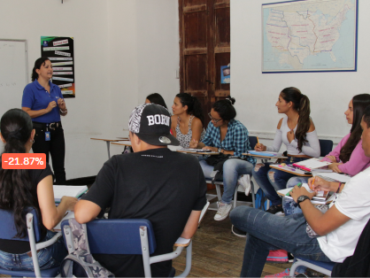

<div class="inglesAdultos">
  <div class="content-image row m-0">
    <div class="col-6 p-0">
      
    </div>
    <div class="col-6">
      <div class="content-text pt-5">
        <h2 class="bg-gray">Cursos</h2>
        <h1 class="bg-black"> Inglés para adultos</h1>
        <h3 class="bg-azul">Este programa está dirigido para personas de los 15 años en adelante. </h3>
        <div class="contenido-ingles">
          <p>Es un programa de inglés comunicativo que consta de 16 niveles los cuales se dividen en 4 módulos, cada uno de 4 niveles. Cada nivel es de 32 horas. Los resultados obtenidos están ligados al Marco Común Europeo de Referencia (MCER).</p>
          <p>Nuestras clases son altamente participativas fomentando la interacción con tus compañeros de clase y docentes desde un enfoque comunicativo en contextos de la vida cotidiana. Aunque el énfasis es en la competencia comunicativa, se profundiza también en las estructuras gramaticales y vocabulario.</p>
        </div>
        <button class="btnAzul">Más información</button>
      </div>
    </div>
  </div>
</div>